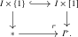
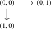
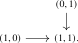
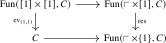
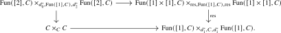
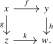
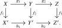

Limits and colimits are among the most important universal constructions in category theory. In the \(\infty \)-categorical setting, their definitions look formally almost identical to the classical ones, provided one replaces sets of morphisms by hom animae.
Definition 1.7.1 (Limit/colimit). Let \(I\) and \(C\) be \(\infty \)-categories and let \(F\colon I \to C\) be a functor.
- (1)
-
A cone on \(F\) is an object \(X\) in \(C\) together with a natural transformation \(\epsilon \colon \const _X \to F\) of functors \(I \to C\).
- (2)
-
A cone \((X,\epsilon )\) is called a limit cone if for every other object \(Y\) of \(C\) the composite \[ \Hom _C(Y,X) \xrightarrow {\const } \Nat (\const _Y, \const _X) \xrightarrow {\epsilon \circ -} \Nat (\const _Y,F) \] is an equivalence.
In this case, the object \(X\) is called the limit of \(F\). It is unique, and will be denoted either by \(\lim _I F\) or \(\lim _{i \in I} F(i)\).
Dually, one defines a cocone to be a natural transformation \(\eta \colon F \to \const _X\). It is a colimit cocone if for every \(Y\) the composite \[ \Hom _C(X,Y) \xrightarrow {\const } \Nat (\const _X, \const _Y) \xrightarrow {- \circ \eta } \Nat (F,\const _Y) \] is an equivalence. The object \(X\) is then called the colimit of \(F\).
Observation 1.7.2. Note that a functor \(F\colon I \to C\) admits a limit in \(C\) if and only if the opposite functor \(F\catop \colon I\catop \to C\catop \) admits a colimit in \(C\catop \).
Remark 1.7.3. If \(I\) and \(C\) are 1-categories, then so is \(\Fun (I,C)\), and hence all animae occurring in Definition 1.7.1 are sets. The condition on a cone \((X,\epsilon )\) then says precisely that for every object \(Y\) the map of sets \[ \Hom _C(Y,X) \to \Nat (\const _Y,F), \qquad u \mapsto \epsilon \circ \const _u, \] is a bijection, that is, that every cone on \(F\) with tip \(Y\) factors uniquely through \((X,\epsilon )\). So Definition 1.7.1 recovers the classical notion of a limit, and dually of a colimit, in a 1-category.
Definition 1.7.4. We say an \(\infty \)-category \(C\) admits all \(I\)-indexed (co)limits if for every functor \(F\colon I \to C\) there exists a (co)limit (co)cone for \(F\). If \(G\colon C \to D\) is a functor between \(\infty \)-categories that admit \(I\)-indexed (co)limits, then we say that \(G\) preserves \(I\)-indexed (co)limits if for every functor \(F\colon I \to C\), the functor \(G\) sends (co)limit (co)cones of \(F\) in \(C\) to (co)limit (co)cones of \(GF\) in \(D\).
For later diagrammatic arguments, it is convenient to encode cones and cocones as functors out of auxiliary indexing categories:
Definition 1.7.5 (Cocone \(\infty \)-categories). For an \(\infty \)-category \(I\), we define the \(\infty \)-category \(I^{\triangleright }\), called the cocone of \(I\), via the following pushout square of \(\infty \)-categories:

We will often denote the object classified by the bottom morphism as \(\infty \). Note that a functor \(\overline {F}\colon I^{\triangleright } \to C\) consists of a functor \(I \times [1] \to C\) whose restriction to \(I \times \{1\}\) is constant. Equivalently, it consists of a functor \(F := \overline {F}\vert _{I \times \{0\}}\colon I \to C\) and an object \(W := \overline {F}(\infty )\) in \(C\) together with a cocone \(F \to \const _W\).
We say that a functor \(\overline {F}\colon I^{\triangleright } \to C\) is a colimit diagram if the associated cocone \(F \to \const _W\) is a colimit cocone.
We dually define \(I^{\triangleleft }\), called the cone of \(I\), as the following pushout of \(\infty \)-categories:
A functor \(\overline {F} \colon I^{\triangleleft } \to C\) consists of a functor \(F\colon I \to C\) together with a cone \(\const _W \to F\). We say that \(\overline {F}\) is a limit diagram if this cone is a limit cone.
The notions of limits and colimits are closely related to that of adjunctions, introduced in Chapter 21. We discuss the relations between (co)limits and adjunctions in Section 21.2.
Let us discuss some special cases of limits/colimits that will be relevant.
Products and coproducts
Definition 1.7.6. Let \(I\) be a set, regarded as a discrete \(\infty \)-category. Given a collection of objects \(x_i\) of \(C\), we refer to a colimit of the corresponding functor \(I \to C\) as a coproduct, and denote it by \(\coprod _{i \in I} x_i\) if it exists. We refer to a limit of \(I \to C\) as a product and denote it by \(\prod _{i \in I} x_i\).
Definition 1.7.7 (Initial/terminal objects). An object \(x\) of an \(\infty \)-category \(C\) is called terminal if for every other object \(y\) the hom anima \(\Hom _C(y,x)\) is contractible. We say that \(x\) is initial if for every other \(y\) the hom anima \(\Hom _C(x,y)\) is contractible.
Exercise 1.7.8. Let \(I\) be a set, and let \(\{x_i\}\) be a collection of objects of an \(\infty \)-category \(C\).
- (1)
-
Show that an object \(x\) in \(C\) is a product of the objects \(x_i\) if and only if it comes equipped with morphisms \(\pr _i\colon x \to x_i\) such that for any other object \(y\) of \(C\) the map \[ (\pr _i \circ -)_i \colon \Hom _C(y,x) \to \prod _{i \in I} \Hom _C(y,x_i) \] is an equivalence of animae.
- (2)
-
Formulate and prove the dual statement for coproducts.
Hint: show that there is an equivalence \(\Fun (I,C) \simeq \prod _{i \in I} C\).
Exercise 1.7.9. Show that the terminal objects of \(C\) are precisely the limits of the unique functor \(F\colon \emptyset \to C\), and that the initial objects are the colimits of \(\emptyset \to C\).
Example 1.7.10. The empty anima \(\emptyset \) is initial in \(\An \) and the one-point anima \(*\) is terminal in \(\An \). Indeed, by Axiom L below the hom anima \(\Hom _{\An }(X,Y)\) may be identified with the mapping anima \(\Map (X,Y) = \Fun (X,Y)^{\simeq }\), and both \(\Fun (\emptyset ,Y)\) and \(\Fun (X,*)\) are contractible.
Pullbacks and pushouts
Recall from Definition 1.4.1 the posets \(\pushout \) and \(\pullback \):


By Axiom D, restricting along the two edges induces equivalences \begin {align*} \Fun (\pushout ,C) &\iso \Fun ([1],C) \times _{d_1^*,C,d_1^*} \Fun ([1],C), \\ \Fun (\pullback ,C) &\iso \Fun ([1],C) \times _{d_0^*,C,d_0^*} \Fun ([1],C) \end {align*}
for every \(\infty \)-category \(C\). In particular, a span \(\;\pushout \; \to C\) is equivalently encoded by a pair of morphisms \((f\colon x \to y, g\colon x \to z)\) with the same source, while a cospan \(\;\pullback \to C\) is equivalently encoded by a pair of morphisms \((h\colon y \to w,k\colon z \to w)\) with the same target.
Definition 1.7.11. Let \(C\) be an \(\infty \)-category, and let \(f\colon x \to y\) and \(g\colon x \to z\) be two morphisms in \(C\), corresponding to a functor \(\pushoutto C\). We refer to a colimit of this functor as a pushout of \(y\) and \(z\) along \(x\). We will denote a pushout by \(y \sqcup _x z\), if it exists.
Dually, given morphisms \(h\colon y \to w\) and \(k\colon z \to w\), we refer to a limit of the corresponding functor \(\pullbackto C\) as a pullback of \(y\) and \(z\) over \(w\), and denote it by \(y \times _w z\).
Remark 1.7.12. For \(C = \An \), these notions recover the classical homotopy pushouts and homotopy pullbacks of algebraic topology. We will show in Section 2.3 that the functor \(\Pi _{\infty }\colon \Top \to \An \) sends homotopy pullbacks of spaces to pullbacks of animae, and homotopy pushouts along relative cell complexes to pushouts of animae, see Proposition 2.3.10, Proposition 2.3.22. This is one of the main ways in which the abstract theory of this chapter connects to classical homotopy theory.
Recall that cocones on \(\pushout \)-indexed diagrams are encoded by the cocone category \(\pushout ^{\triangleright }\) from Definition 1.7.5. We will now see that this category is equivalent to the indexing diagram encoding commutative squares.
Lemma 1.7.13. The functor \(\pushout \times [1] \to [1] \times [1]\) described informally by the diagram
induces an equivalence \(\pushout ^{\triangleright } \iso [1] \times [1]\).
Proof. Since \(\pushout \! \times [1]\) is a pushout of two copies of \([1] \times [1]\) and \([1] \times [1]\) is a pushout of two copies of \([2]\), we may construct such a functor by gluing two copies of the functor \(p_2\colon [1] \times [1] \to [2]\) from Construction 1.4.3. By construction, the restriction of this functor to \(\pushout \! \times \{1\}\) is the identity on \((1,1)\), hence it factors through a map \(\pushout ^{\triangleright } \to [1] \times [1]\). To show that it is an equivalence, we must show that for any \(\infty \)-category \(C\) the induced commutative square

is a pullback square. Again using the pushout descriptions of \(\pushout \! \times [1]\), \([1] \times [1]\) and \(\pushout \! \times \{1\}\), this square may be identified with

The claim now follows from the right pullback square in Proposition 1.4.4. □
Exercise 1.7.14. Construct an analogous equivalence \(\pullback ^{\triangleleft } \iso [1] \times [1]\).
Convention 1.7.15. From now on, given a diagram \(\pushoutto C\) encoded by two morphisms \(f\colon x \to y\) and \(g\colon x \to z\), we will always use the lemma to identify cocones over this diagram with commutative squares in \(C\) of the form

Similarly, given morphisms \(h\colon y \to w\) and \(k\colon z \to w\), we will identify cones over the corresponding diagram \(\pullbackto C\) with commutative squares of the above form.
Definition 1.7.16. We say a commutative square in \(C\) of the form (1.1) is a pushout square if the corresponding cocone in \(C\) is a colimit cocone, in which case we have \(w \simeq y \sqcup _x z\). Dually, we say the square is a pullback square if the corresponding cone in \(C\) is a limit cone, in which case we have \(x \simeq y \times _w z\).
Exercise 1.7.17 (Pasting lemma for pullback squares). Consider a commutative diagram

If the right-hand square is a pullback square, then the left-hand square is a pullback square if and only if the outer rectangle is a pullback square. Hint: compare with Lemma 1.3.15.
Exercise 1.7.18. Formulate and prove the dual pasting lemma for pushout squares.
Geometric realizations and totalizations
Definition 1.7.19. Let \(C\) be an \(\infty \)-category, and let \(X\colon \simp \catop \to C\) be a simplicial object. The colimit of \(X\), if it exists, is called the geometric realization of \(X\), and is denoted by \[ \abs {X} \quad := \quad \colim _{[n] \in \simp \catop } X_n. \] If \(C\) admits all \(\simp \catop \)-indexed colimits, we denote the resulting colimit functor by \(\abs {-}\colon \s C \to C\).
Remark 1.7.20. The terminology is inspired by the classical geometric realization functor from Definition 1.6.9, which glues topological simplices according to the structure maps of a simplicial set.
Definition 1.7.21. Let \(C\) be an \(\infty \)-category and let \(X\colon \simp \to C\) be a cosimplicial object. The limit of \(X\), if it exists, is called the totalization of \(X\).
Generated from the authoritative LaTeX source.